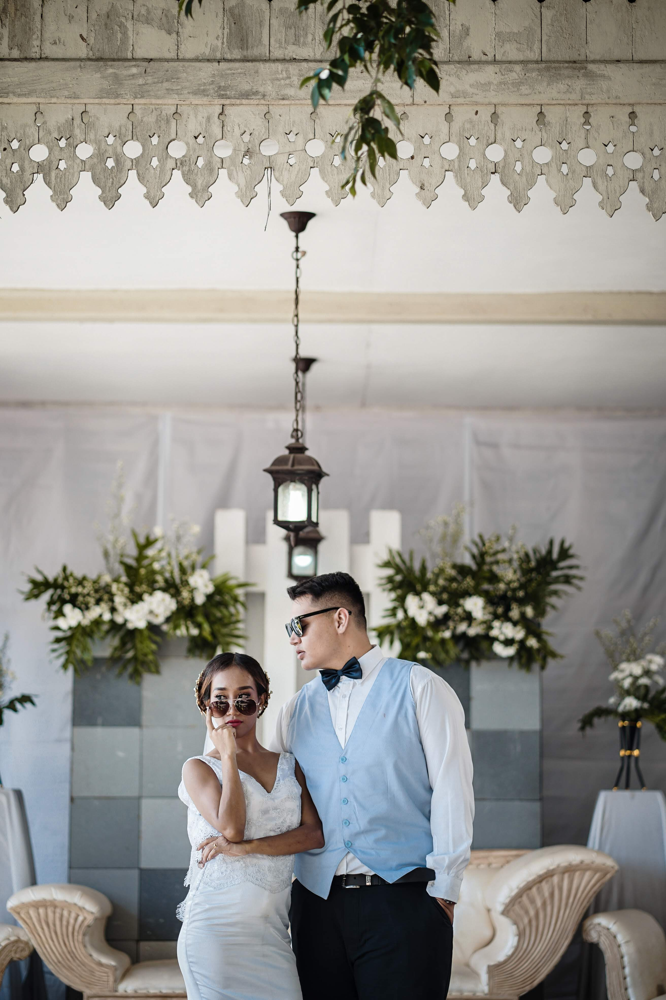

Listed below are moments I consider the most important parts of my life currently, turning this page into a digital album. This is *obviously* still a work in progress as my life is still in progress. I plan to update this page every time I hit a personal milestone. I hope you enjoy this sneak peak into my life.

This was the day I realised that life was never going to be the same. The joy I felt this day, watching my wife walk up the aisle and being awe struck at how beautiful she was and still is to this day.

This is the day my wife and I decided to hold a little photoshoot session in our hotel room the day before graduation day. Little backstory, my wife is a kindergarten teacher and her school would host a little graduation party for the students in a hotel. My wife was 37 weeks pregnant and we were expecting our little one to come very soon.
This is the first time we all went out as a family as Elizabeth was finally old enough to be able to go outdoors. We went to church to get her dedicated, it's basically like getting baptised but without the holy water ceremony.

Skipping ahead a few year *cough* pandemic *cough* this was our first real roadtrip to a completely unknown area of Indonesia with lush forest, tea farms as far as the eye can see and joy radiating from all of us.
A special dinner in a treehouse in the hotel that we stayed at for our wedding anniversary. It's always an amazing feeling to see my two favourite people enjoying themselves.
Due to the fact that I had to move to the UK during the pandemic meant that this was technically only the 2nd time I was able to enjoy my anniversary with my wife together. We went to the restaurant we first went to on our first night of being married and it was magical.